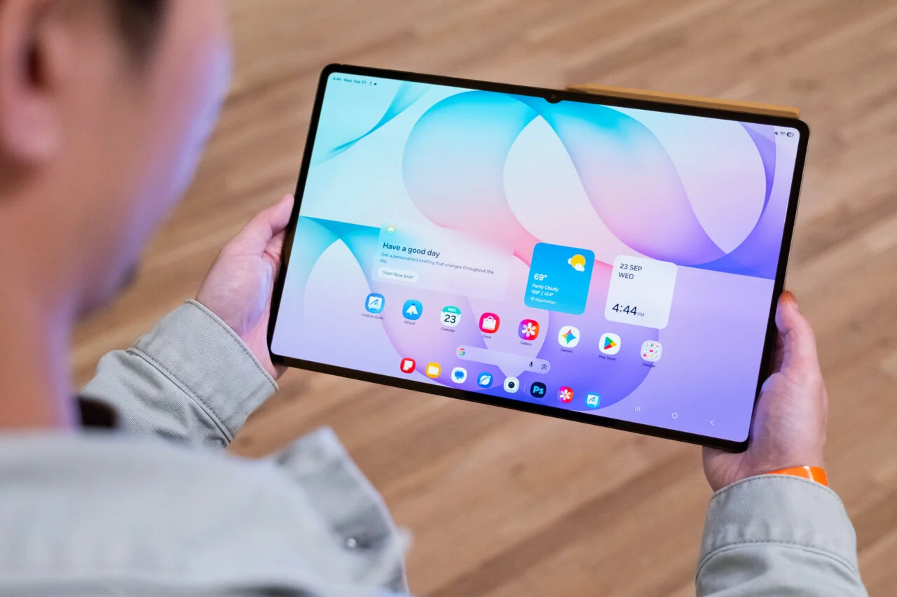
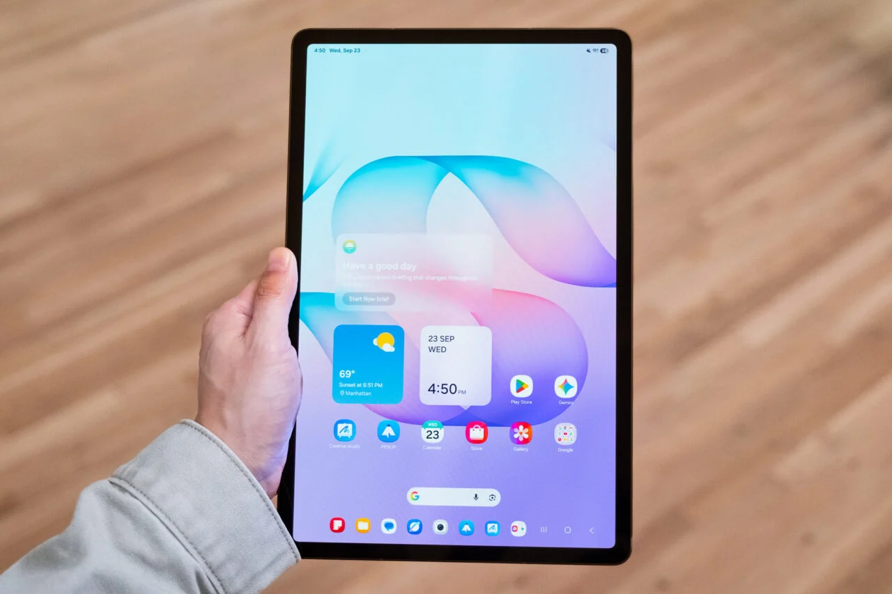
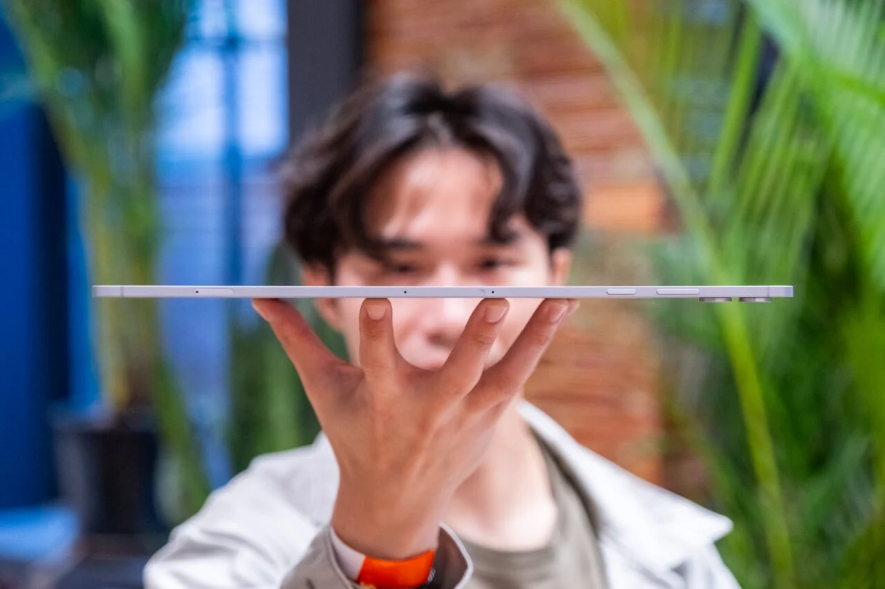
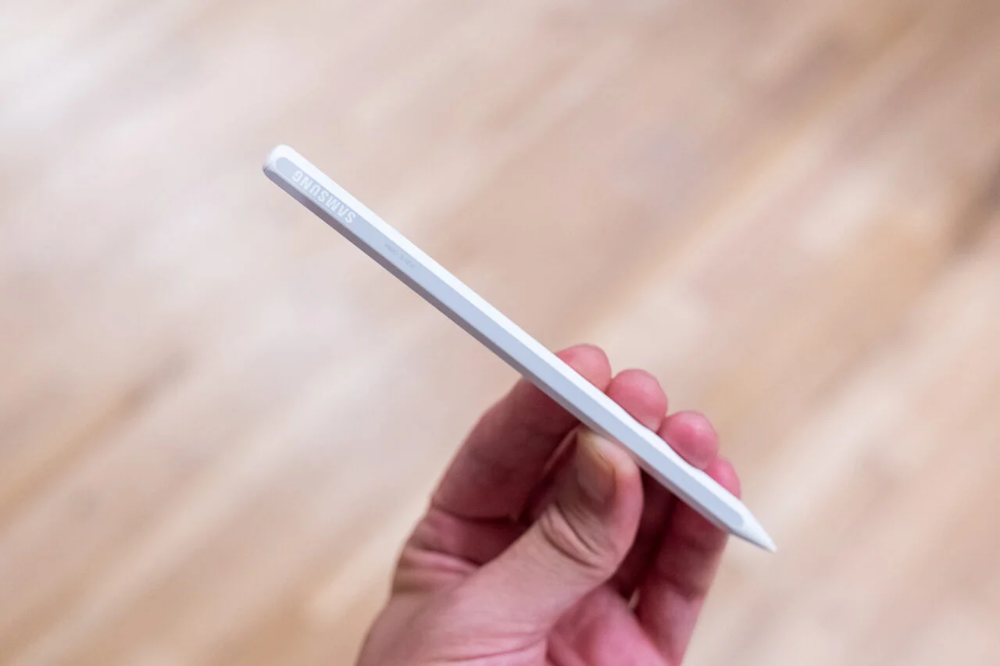
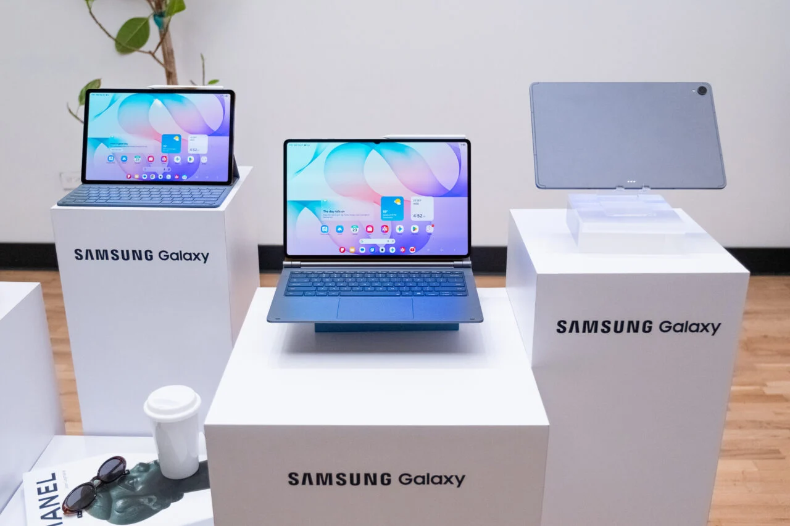
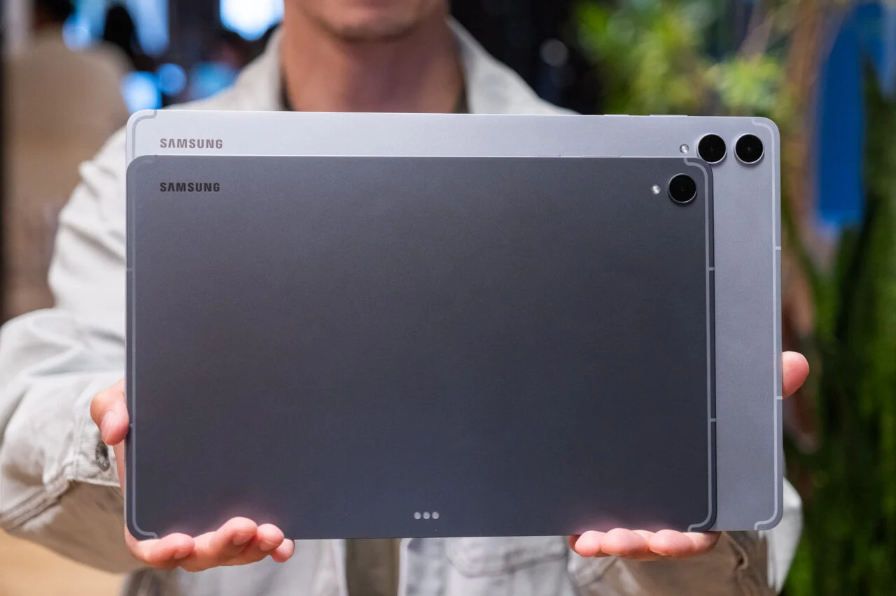
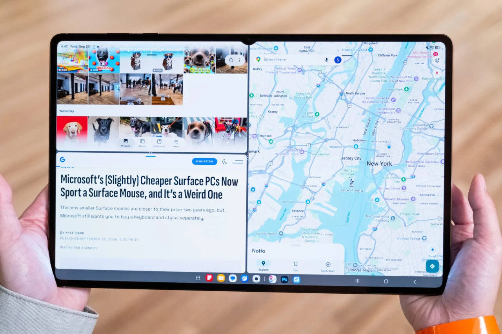

Samsung’s new Galaxy Tab S12 Ultra is huge with its expansive 14.6-inch display. It’s also super thin at only 5.1mm. But, my god, the screen is like a tractor beam sucking you right in.
A smaller version, the Galaxy Tab S12+, has a 12.6-inch screen that’s slightly larger than the 11-inch Galaxy Tab S11 released last year. The Tab S12+ is marginally thicker than the Tab S12 Ultra at 5.3mm and you can tell it’s the cheaper model because the bezels are a little thicker and there’s no nipple for the front-facing camera.

The Galaxy Tab S12 Ultra is massive in the hands.
Both Android tablets are straightforward successors to the Tab S11 and Tab S11 Ultra, respectively. But like all gadgets this year, they cost more. The Tab S12+ starts at $1,199.99, up from the $799.99 that the Tab S11 started at last year. The Tab S12 Ultra starts at $1,399.99, up from the $1,199.99 for the Tab S11 Ultra. A 5G version is exclusive to the Tab S12+ and costs $1,349.99. Both models come in gray or silver. For the money, you’re mostly getting a faster chipset. The MediaTek Dimensity 9500 chip in both tablets has a 19% faster CPU, a 17% faster GPU, and a 61% faster neural processing unit (NPU) compared to the Tab S11 Ultra. You’ll get the most out of these tablets if you’re using apps that rely on AI, like the generative functionalities in Adobe Photoshop and Lightroom.

The Tab S12+ has thicker bezels and doesn’t have a nipple for the webcam.
The Tab S12+ comes with 12GB of RAM with either 256GB or 512GB of storage, expandable via the microSD card slot up to 2TB. The battery is a larger 10,600mAh cell compared to the Tab S11’s 8,400mAh. The Tab S12+ has one camera on the front (12-megapixel ultrawide) and one on the back (13 megapixels).

The Tab S12 Ultra is super thin at 5.1mm.
The Tab S12 Ultra is a little beefier. While all models have a microSD card for storage expansion and the same 12GB of RAM plus 256GB or 512GB storage configurations, there’s also a 16GB RAM version with 1TB of storage. The Tab S12 Ultra also has faster Wi-Fi 7 (the Tab S12+ only supports Wi-Fi 6E) and an additional 8-megapixel ultrawide camera on the rear along with the 13-megapixel main shooter and 12-megapixel ultrawide front-facing camera. Oh, and the Tab S12 Ultra has an in-display fingerprint reader.

The S Pen is included in the box.
Both tablets have an IP68 rating, quad speakers, and come with an S Pen that snaps on to the top with magnets. And, of course, you get Samsung’s usual slate of software features like DeX mode and Quick Share (now compatible with AirDrop).

The Book Cover Keyboard Slim (left) on the Tab S12+ and Pro Keyboard (center) on the Tab S12 Ultra.
There are also two keyboards for each: a Pro Keyboard and Book Cover Keyboard Slim.

Size comparison between the two Tab S12 tablets. Note the number of cameras on each model.
Maybe the most enticing thing to consider is that Samsung is throwing in a ton of free app trials it says are worth $445. Both tablets come with four months of Adobe Photoshop, two months of Adobe Lightroom, six months of Google AI Pro with 5TB of online storage, six months of Notability, 12 months of GoodNotes, one month of LumaFusion, and six months of Clip Studio Paint.

Running three apps is easier on the Tab S12 Ultra.
In my brief hands-on time with both tablets, I found both tablets snappy and very thin. Not that last year’s two Tab S11 devices weren’t snappy. The Tab S12 Ultra is as huge as ever. It really feels like Samsung ripped off the screen from a laptop. That big screen does make watching videos, reading, and running multiple apps at once easier than on the Tab S12+.
As one of the few non-Apple companies making decent tablets, Samsung’s latest offerings look pretty solid. Both tablets go on sale on Oct. 7.